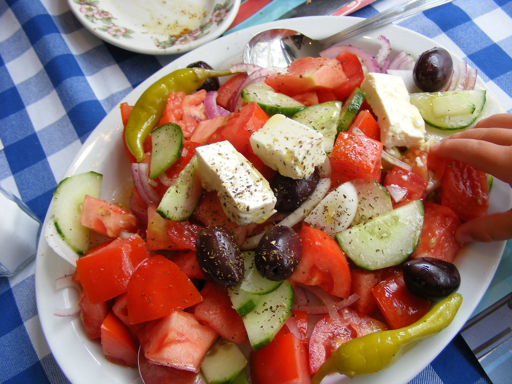

Greek Salad

Description
A fresh and colorful Greek salad with crisp veggies, creamy feta cheese, and a light olive oil dressing. It's quick, healthy, and full of flavor!
Ingredients
- 1 cucumber
- 2 large tomatoes
- 1 small red onion
- 1 green bell pepper (optional)
- 200g feta cheese
- A handful of Kalamata olives (or balck olives)
- 2 tablespoons olive oil
- 1 teaspoon dried oregano
- Salt & pepper to taste
Steps
- Chop veggies: Cut cucumber, tomatoes, and bell pepper into bite-sized pieces. Slice the red onion thinly.
- Combine: Put all chopped veggies in a large bowl.
- Add cheese & olives: Cut feta into cubes (or crumble) and add to the bowl. Toss in olives.
- Drizzle & season: Pour olive oil over the salad. Sprinkle oregano, salt, and pepper. Mix gently.
- Serve: Enjoy fresh!
Tip: For extra flavor, add a splash of lemon juice.
Home